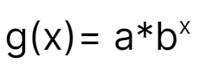

1. Chapters 3-4

This poster will cover:
- Quadratic Functions (Chapter 3)
- Exponential Functions (Chapter 4)
Quadratic Functions (Chapter 3):
In this chapter, you learnt:
- Quadratic Properties
- Quadratic functions can be represented by equations in function notation, by tables of values, or by graphs.
- They have a degree of 2.
- Quadratic equations can be solved with factoring, graphing and solving using the quadratic equation.
- Quadratic Forms
- Min/Max Values
- If a > 0 in a quadratic equation, then it has a min value.
- Otherwise if a < 0, then the equation has a max value.
- Keep in mind a quadratic equation cannot have a = 0.
- Vertex
- The vertex can be found from the standard form:
- . . . by completing the square to put the quadratic in vertex form
- . . . by expressing the quadratic in factored form, if possible, and averaging the zeros at r and s to locate the axis of symmetry. This will give the x-coordinate of the vertex. Plugin the x into the equation to find the y value of the vertex.
- Inverse Equations
- Key points to note:
- Input value in original equation becomes output value in inverse equation and vice versa
- Is a reflection across y = x
- Tip: The inverse is only a function if the original function domain is restricted to one branch.
- Example:
- Simplifying Radicals
- You can simplify by converting to a mixed radical.
- The only radicals that can be added or subtracted into a single term are like radicals.
- An answer containing a radical is an exact answer. An answer containing a decimal is an approximate answer.
- A mixed radical is in simplest form when the smallest possible number is written under the radical sign.
- Example:
- Discriminant
- Intersection between Linear and Quadratic Formula
- Set them equal to each other to solve for x. Then using that x value, plugin to the linear formula and solve for y. (x, y) is the intersection. Keep in mind that there may be 0, 1 or 2 points of intersection.
Exponential Functions (Chapter 4):
In this chapter, you learnt:
- General Exponential Equation:
- Exponential Rules
- Growth/Decay Questions

- Use this equation, where a is the initial # and x is # of growth/decay periods.
- A growth equation has b = 1 + growth rate
- A decay equation has b = 1 - decay rate